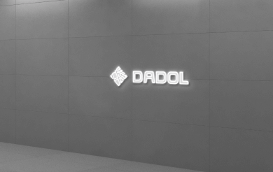
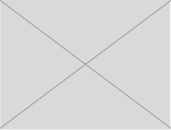
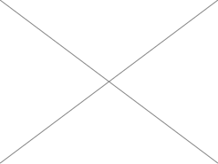
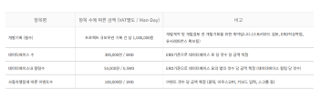

제품 서비스
소프트웨어
디지털 기술로 다양한 수요에 맞춘 혁신과 가치창출
대표이사 : 윤양식
TEL : 1544-5969 / email : hello@thecarmeleon.com
Head Office : 세종특별자치시 연기면 조뱅이길 76-17
R&D Center : 부산광역시 남구 신선로 337번길 83-1
© DADOL Company. All Rights Reseved.
TEL : 1544-5969 / email : hello@thecarmeleon.com
Head Office : 세종특별자치시 연기면 조뱅이길 76-17
R&D Center : 부산광역시 남구 신선로 337번길 83-1
© DADOL Company. All Rights Reseved.
(주) 다돌
DADOL
SI & Solution
컨설팅부터 시스템 구축, 솔루션개발, 업무지원 시스템, 웹, 홈페이지,
쇼핑몰 등 맞춤형 시스템에 대해 개발을 의뢰할 수 있습니다. IT분야의
고경력 전문개발인력과 디자인인력이 in-house 환경에서 기획단계부터
개발, 최종배포까지 직접적인 참여하여 고객에게 최고의 결과물을
제공합니다.
설마, 기획 없이
개발을 맡기셨나요?
개발을 맡기셨나요?
기획 단계
스토리 보드
기획없이 개발했을 때 생기는 문제점들
컨설팅부터 시스템 구축, 솔루션개발, 업무지원 시스템, 웹, 홈페이지,
쇼핑몰 등 맞춤형 시스템에 대해 개발을 의뢰할 수 있습니다. IT분야의
고경력 전문개발인력과 디자인인력이 in-house 환경에서 기획단계부터
개발, 최종배포까지 직접적인 참여하여 고객에게 최고의 결과물을
제공합니다.



컨설팅부터 시스템 구축, 솔루션개발, 업무지원 시스템, 웹, 홈페이지,
쇼핑몰 등 맞춤형 시스템에 대해 개발을 의뢰할 수 있습니다. IT분야의
고경력 전문개발인력과 디자인인력이 in-house 환경에서 기획단계부터
개발, 최종배포까지 직접적인 참여하여 고객에게 최고의 결과물을
제공합니다.
투명하고 정확한
개발비용과 및 기간산정
개발비용과 및 기간산정